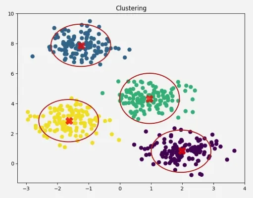
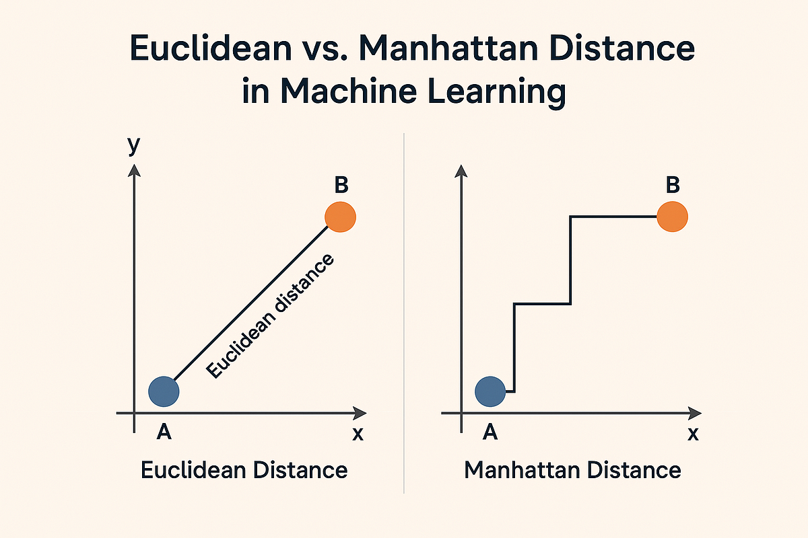
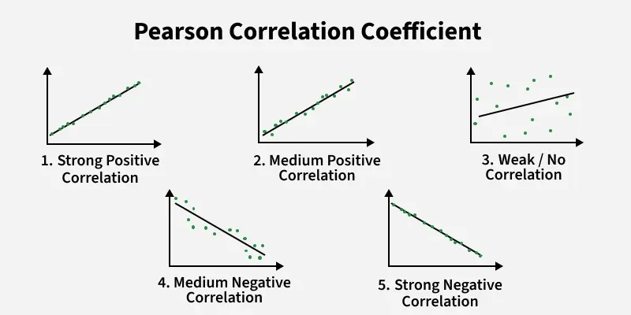
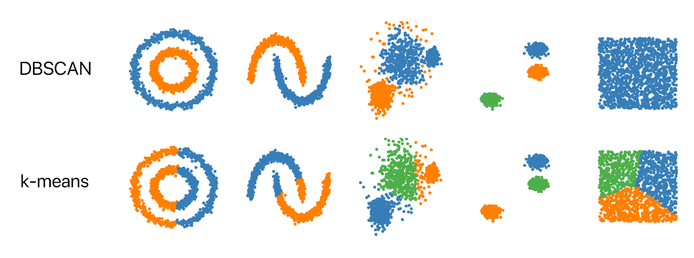
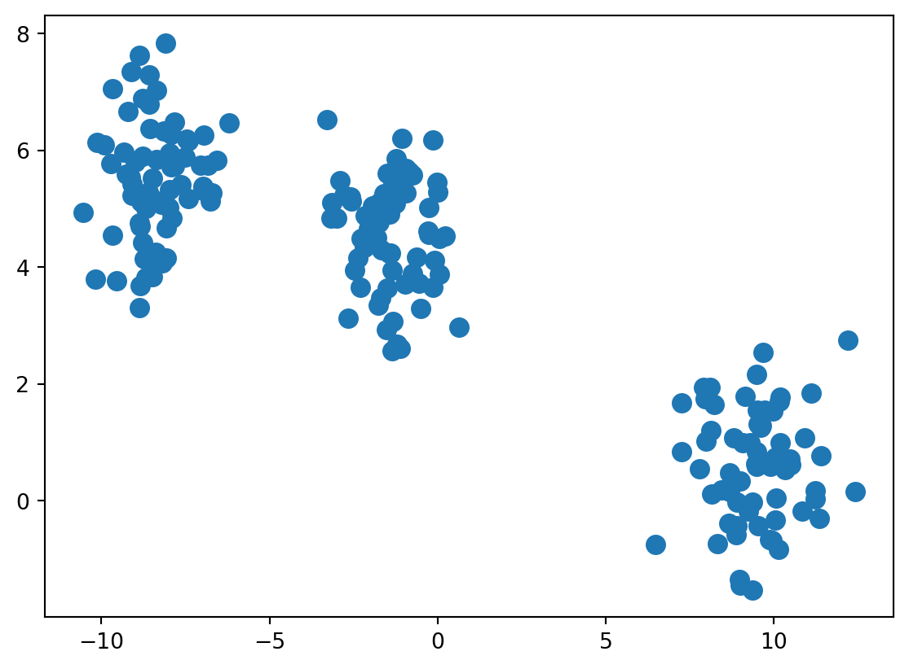
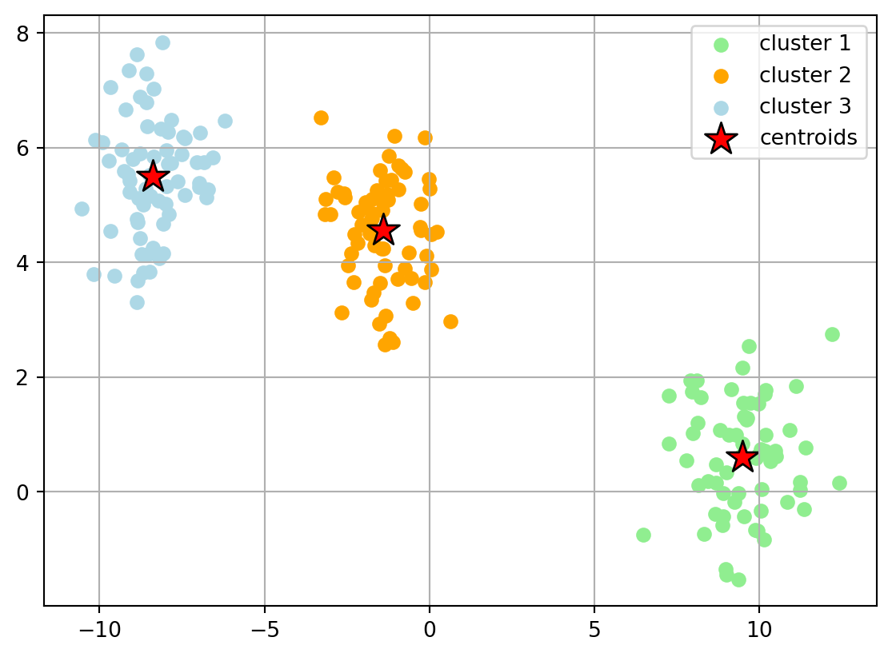
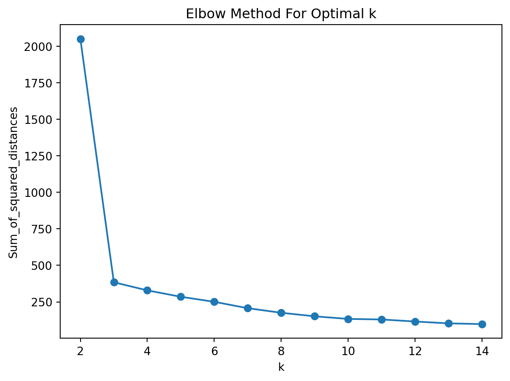
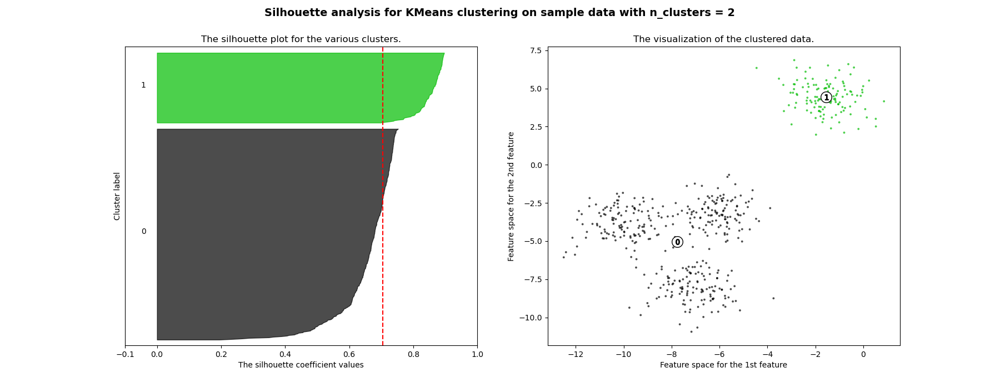
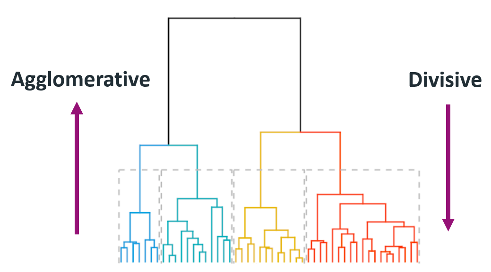
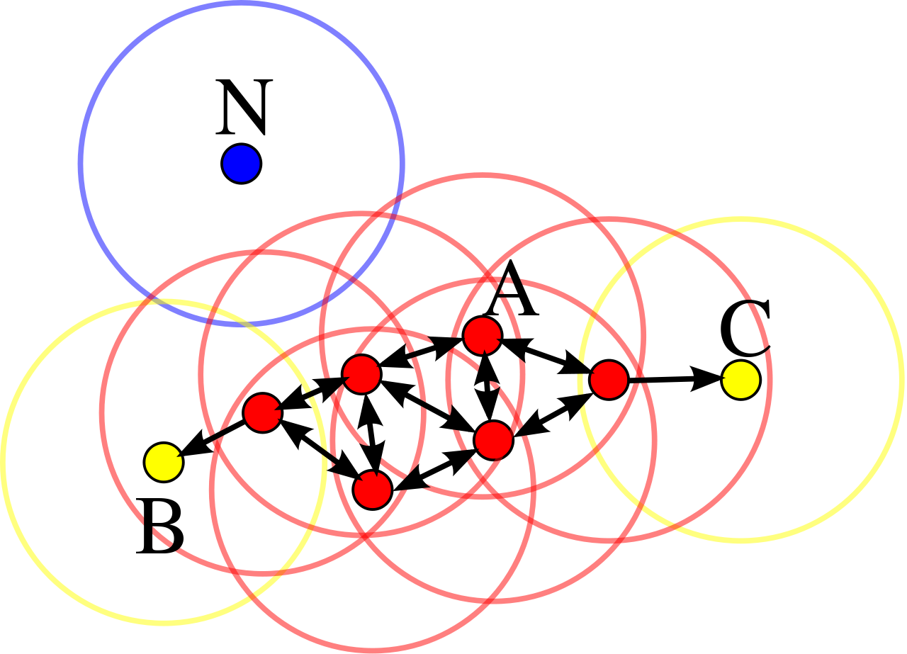

import pandas as pd
import numpy as np
pd.set_option('display.max_columns', None)Session 14: Classtering
Classtering
k-means
Segmentation
PCA
Learning objectives
- Segmentation
- Clustering
- K-means
- Hierarchical
- DBSCAN
- Distance Metrics
- Euclidean
- Manhattan
- Pearson Correlation
- Evaluation Metrics
- Elbow Method
- Silhouette analysis
- Case Study
Customer Segmentation
Customer segmentation can be defined as the practice of dividing a customer base into groups of individuals that are similar in specific ways relevant to Marketing

Why Segment Customers?
In one word: for differentiation!
- Marketing and Service:
- Make more focused/targeted marketing
- Identify the most profitable and at-risk customers
- Build relationships
- Create user personas
- Pruduct and Brand:
- Brand to appeal to particular segments
- Customize products and services
- Predict future purchasing patterns
- Pricing:
- Pricing products by groups
- Determine Willingness to pay for optimal value
Important
There are number of ways for the customer segmentation, here we are going to do one using Clustering algorithms.
Clustering
Customer segmentation can be achieved by using ML unsupervised learning algorithms
Unsupervised learning: No target variable, the goal is to discover patterns in data.
We are not going to discuss detailed technical aspects of the algorithms in the scope of the course, however the intuition and some evaluation metrics will be covered.
Apart from Customer Segmentation, the clustering algorithms are also used in:
- Dimensionality Reduction
- Feature Generation
- Recommendation
- Splitting Supervised ML algorithms
Clustering Algorithms are based on
geometrical distances

Similarity and Distance
High level idea of clustering is to identify closest points. “The closeness” can be measured by number of distance metrics.
Those Distances could be in different types. The mose popular ones are:
- Euclidean Distance
- Manhattan Distance
- Pearson Correlation Distance
Euclidean distance
\[d_{euc}(x,y)=\sqrt{\sum_{i-1}^n(x_i-y_i)^2}\]
Manhattan distance
\[d_{man}(x,y)=\sum_{i-1}^n|x_i-y_i|\]

Pearson correlation distance:
\[d_{p.corr}(x,y)=1-\frac{\sum_{i-1}^n(x_i-\bar x)(y_i-\bar y)}{\sqrt{\sum_{i-1}^n(x_i-\bar x)^2 \sum_{i-1}^n(y_i-\bar y)^2 }}\]

Performance of Clustering Algorithms
There are 2 main groups of evaluation metrics:
- External Measures: comparing with the ground truth labels
Accuracy:\(acc(y,\hat y)=\frac{1}{n}\sum_{i=1}^{n-1}(\hat y_i=y_i)\)Homogeneity:A homogeneous clustering is one where each cluster has samples belonging the same class labels \(h=\frac{H(C/k)}{H(C)}\)Completeness:A complete clustering is one where all samples belonging to the same class as grouped into the same cluster \(c=\frac{H(K/C)}{H(K)}\)V-Measure:the harmonic mean between homogeneity and completeness: \(2\frac{hc}{h+c}\)
- Internal Measures:
qualityof separation based on geometrical properties:- Elbow Method
- Silhouette Coefficient
Cohesion: measures the distance of a point from the rest of the points within the cluster
Separation: measures the distance of point from cluster to the all points from other clusters
Clustering Set-Up
Problem set-up:
- Result: assignment to clusters
- Predictors: numerical and categorical
As mentioned there are lots of clustering algorithms, in the scope of the program we are going to work with K-Means Clustering.

K-Means Clustering
The most famous clustering algorithm.
Problem set-up:
- Result: assignment to clusters (each observation to a single cluster)
- Predictors: numerical
- Pre-specified number of clusters!
ImportantGoal
Minimizing total within-cluster Euclidean distances:
\[W(C_k)=\sum_{x_i \in C_k}(x_i-\mu_k)^2\] \[minimize(\sum_{k=1}^k W(C_k))\]
K-Means Steps
- Choose the number \(K\) of clusters.
- Select at random \(K\) points, the centroids, not necessarily from your data.
- Assign each data point to the closest centroid.
- Compute and place the new centroid of each cluster.
- Reassign each data point to the new closest centroid. If any assignment took place, go to step 4; otherwise, finish.

With Fake Data
Fake Data
Let’s use make_blobs to create a 200 samples, of two classes with 3 centers
import matplotlib.pyplot as plt
from sklearn.datasets import make_blobs
X, Y = make_blobs(n_samples=200, n_features=2, centers=3,
cluster_std=1, shuffle=True, random_state=7)plt.scatter(X[:, 0], X[:, 1], marker='o', s=70)
plt.show()
K-Means Fit
from sklearn.cluster import KMeans
km = KMeans(n_clusters=3, max_iter=500)
y_km = km.fit_predict(X)# plot the 3 clusters
plt.scatter(X[y_km == 0, 0], X[y_km == 0, 1], c='lightgreen', label='cluster 1')
plt.scatter(X[y_km == 1, 0], X[y_km == 1, 1], c='orange', label='cluster 2')
plt.scatter(X[y_km == 2, 0], X[y_km == 2, 1], c='lightblue', label='cluster 3')
# plot the centroids
plt.scatter(km.cluster_centers_[:, 0], km.cluster_centers_[:, 1],
s=250, marker='*',c='red', edgecolor='black',label='centroids')
plt.legend(scatterpoints=1)
plt.grid()
Optimal Number of Clusters
How to find out the optimal number of clusters, when there is no ground truth?
The only option is to use geometric properties of cluster:
- Elbow method: Running the algorithm multiple times over a loop, with an increasing number of cluster choice and then plotting a
*clustering score*as a function of the number of clusters. The point with Elbow like shape will show the optimal number of cluster. - Silhouette Analysis: the normalized average distance between points.
In the scope of segmentation, we are going to observe only those metrics.
Elbow Method
Sum_of_squared_distances = []
K = range(2,15)
for k in K:
km = KMeans(n_clusters=k, init='random', n_init=10, max_iter=500, tol=1e-04, random_state=0)
km = km.fit(X)
Sum_of_squared_distances.append(km.inertia_)
# Plot Results
plt.plot(K, Sum_of_squared_distances, marker='o')
plt.xlabel('k')
plt.ylabel('Sum_of_squared_distances')
plt.title('Elbow Method For Optimal k')
plt.show()
Silhouette Analysis
Clusters could be evaluated based on similarity or dissimilarity measure such as the distance between cluster point.
Silhouette Coefficient:
\[s=\frac{b-a}{max(a,b)}; [-1,1]\]
where:
- \(a:\) the average distance from a point to other points within a cluster (intra-cluster)
- \(b:\) the average distance from a point to the other closest cluster (extra-cluster)
when:
- \(s=-1:\) misclassified
- \(s=0:\) there is no difference between clusters
- \(s=1:\) ideal split
Selecting the one which has the highest average silhouette score:
from sklearn.metrics import silhouette_score
for n_clusters in range(2,10):
clusterer = KMeans(n_clusters=n_clusters, random_state=10)
cluster_labels = clusterer.fit_predict(X)
silhouette_avg = silhouette_score(X, cluster_labels)
print("For n_clusters =", n_clusters,
"The average silhouette_score is: {:4f}".format(silhouette_avg))For n_clusters = 2 The average silhouette_score is: 0.748643
For n_clusters = 3 The average silhouette_score is: 0.785358
For n_clusters = 4 The average silhouette_score is: 0.641820
For n_clusters = 5 The average silhouette_score is: 0.461010
For n_clusters = 6 The average silhouette_score is: 0.477107
For n_clusters = 7 The average silhouette_score is: 0.325233
For n_clusters = 8 The average silhouette_score is: 0.478205
For n_clusters = 9 The average silhouette_score is: 0.361148
Tip
For more information you can visit here.
Other Clusering Methods
Hierarchical Clustering
- Agglomerative (bottom-up): each observation starts as . Based on the distance of those clusters (in this case observations) it will merge into one cluster.
- Divisive (Top-Bottom): starts at the top with The cluster will be partitioned at a point where it splits the big cluster into two big ones. This will get to a point where the observations cannot be split any more since each observation becomes its own cluster.
Steps
- Make each data point a single point cluster (forms \(N\) cluster)
- Take the 2 closes data point and make them 1 cluster (forms \(N-1\))
- Take the 2 closest clusters and make them 1 cluster (\(N-2\) clusters)
- Repeat step 3 until there is only 1 cluster
- Finish

DBSCAN
DBSCAN: Density Based Spatial Clustering of Applications with Noise.

How it works?

Components:
- \(\pmb{\epsilon:}\) indicates the radius of circular points
- considering minimum points within the \({\epsilon}\)
- In case of availability at least Min points, that point will be considered as Core Point
- In case of availability at least one core point within the radios of epsilon
- none of the above conditions are met
The algorithm works in a following way:
- Select a random starting point: p
- Finding Epsilon neighborhood of point p
- if it turns out core point, then cluster is formed
- if it is a border point, search other points, until all points in data are processed
Case Study
Clusering Travel Agency Booking Data
Our Goal is to find Customer Segments in order to help Marketing Team to target them more effectively!
Downloading The Data
df = pd.read_csv('https://raw.githubusercontent.com/hovhannisyan91/data_analytics_with_python/refs/heads/main/data/clustering/travel.csv')
df.head()| date_time | site_name | posa_continent | user_location_country | user_location_region | user_location_city | orig_destination_distance | user_id | is_mobile | is_package | channel | srch_ci | srch_co | srch_adults_cnt | srch_children_cnt | srch_rm_cnt | srch_destination_id | srch_destination_type_id | is_booking | cnt | hotel_continent | hotel_country | hotel_market | hotel_cluster | |
|---|---|---|---|---|---|---|---|---|---|---|---|---|---|---|---|---|---|---|---|---|---|---|---|---|
| 0 | 11/3/2014 16:02 | 24 | 2 | 77 | 871 | 36643 | 456.1151 | 792280 | 0 | 1 | 1 | 12/15/2014 | 12/19/2014 | 2 | 0 | 1 | 8286 | 1 | 0 | 1 | 0 | 63 | 1258 | 68 |
| 1 | 3/13/2013 19:25 | 11 | 3 | 205 | 135 | 38749 | 232.4737 | 961995 | 0 | 0 | 9 | 3/13/2013 | 3/14/2013 | 2 | 0 | 1 | 1842 | 3 | 0 | 1 | 2 | 198 | 786 | 37 |
| 2 | 10/13/2014 13:20 | 2 | 3 | 66 | 314 | 48562 | 4468.2720 | 495669 | 0 | 1 | 9 | 4/3/2015 | 4/10/2015 | 2 | 0 | 1 | 8746 | 1 | 0 | 1 | 6 | 105 | 29 | 22 |
| 3 | 11/5/2013 10:40 | 11 | 3 | 205 | 411 | 52752 | 171.6021 | 106611 | 0 | 0 | 0 | 11/7/2013 | 11/8/2013 | 2 | 0 | 1 | 6210 | 3 | 1 | 1 | 2 | 198 | 1234 | 42 |
| 4 | 6/10/2014 13:34 | 2 | 3 | 66 | 174 | 50644 | NaN | 596177 | 0 | 0 | 9 | 8/3/2014 | 8/8/2014 | 2 | 1 | 1 | 12812 | 5 | 0 | 1 | 2 | 50 | 368 | 83 |
Feature Descritpion
| Column Name | Description | Data Type |
|---|---|---|
| date_time | Timestamp | string |
| site_name | ID of the Expedia point of sale | int |
| posa_continent | ID of continent associated with site_name |
int |
| user_location_country | ID of the country the customer is located in | int |
| user_location_region | ID of the region the customer is located in | int |
| user_location_city | ID of the city the customer is located in | int |
| orig_destination_distance | Physical distance between a hotel and a customer at the time of search | double |
| user_id | ID of user | int |
| is_mobile | 1 when a user connected from a mobile device, 0 otherwise | tinyint |
| is_package | 1 if the click/booking was generated as part of a package, 0 otherwise | int |
| channel | ID of a marketing channel | int |
| srch_ci | Check-in date | string |
| srch_co | Check-out date | string |
| srch_adults_cnt | Number of adults specified in the hotel room | int |
| srch_children_cnt | Number of children specified in the hotel room | int |
| srch_rm_cnt | Number of hotel rooms specified in the search | int |
| srch_destination_id | ID of the destination where the hotel search was performed | int |
| srch_destination_type_id | Type of destination | int |
| hotel_continent | Hotel continent | int |
| hotel_country | Hotel country | int |
| hotel_market | Hotel market | int |
| cnt | Number of similar events in the context of the same user session | tinyint |
| hotel_cluster | ID of a hotel cluster | bigint |
| is_booking | 1 if a booking, 0 if a click. This is what we are predicting | int |
Dataframe Size
# Get some base information on our dataset
print ("Rows: " , df.shape[0])
print ("Columns: " , df.shape[1])Rows: 100000
Columns: 24